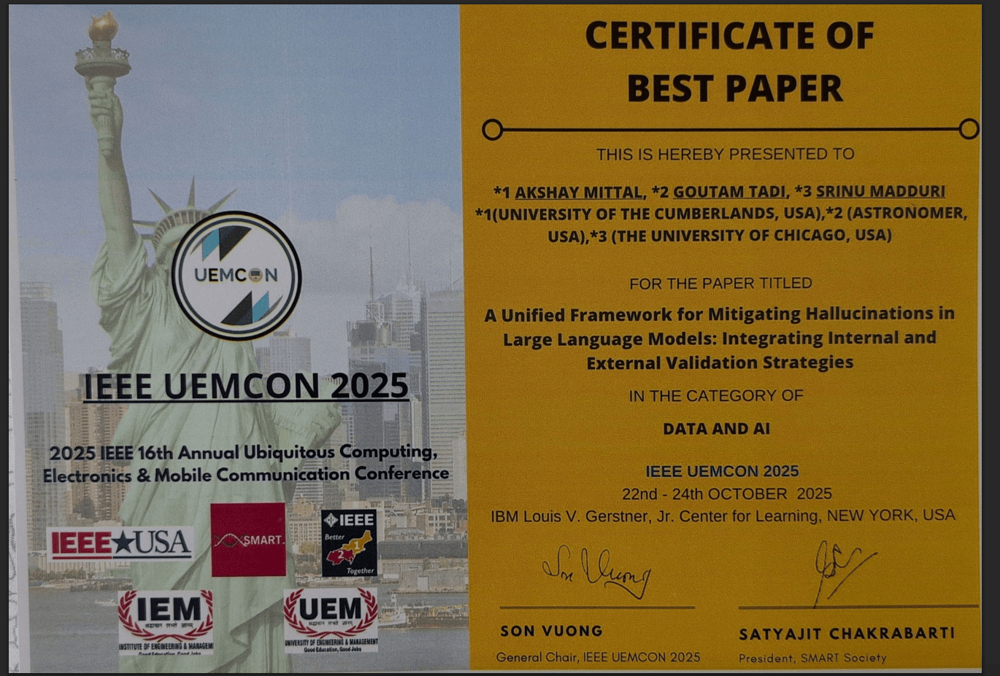
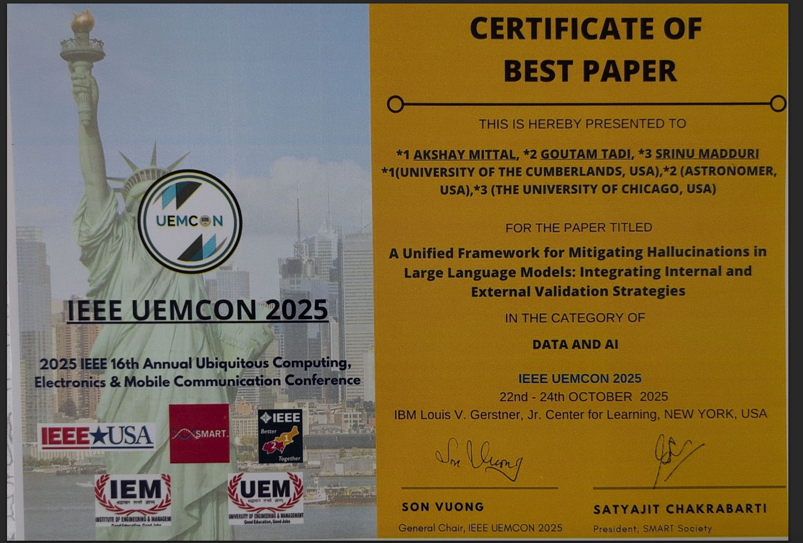
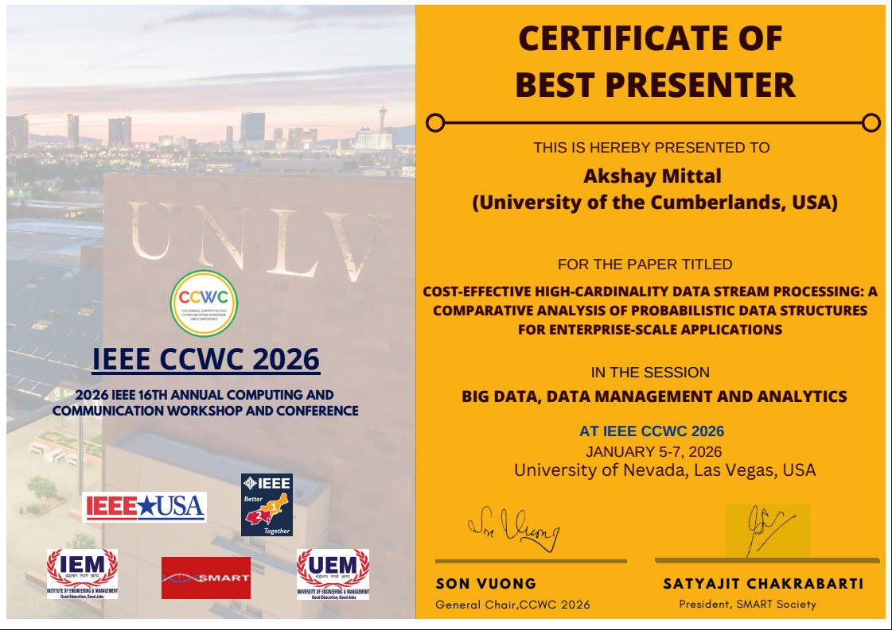
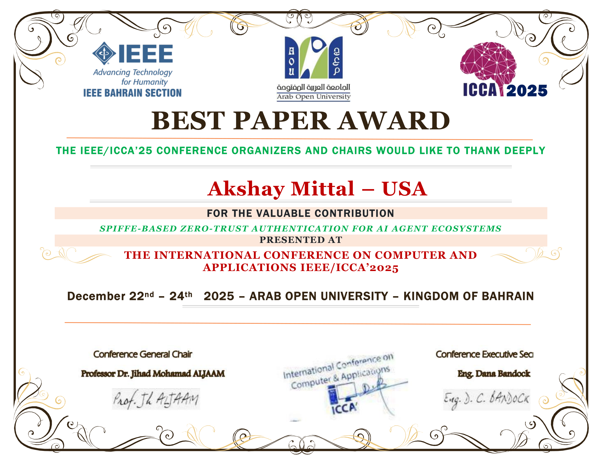
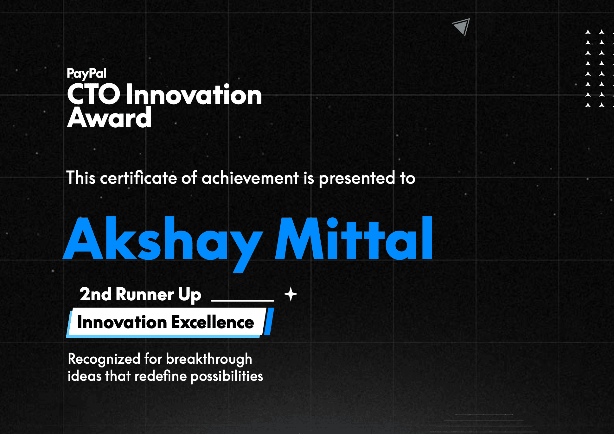
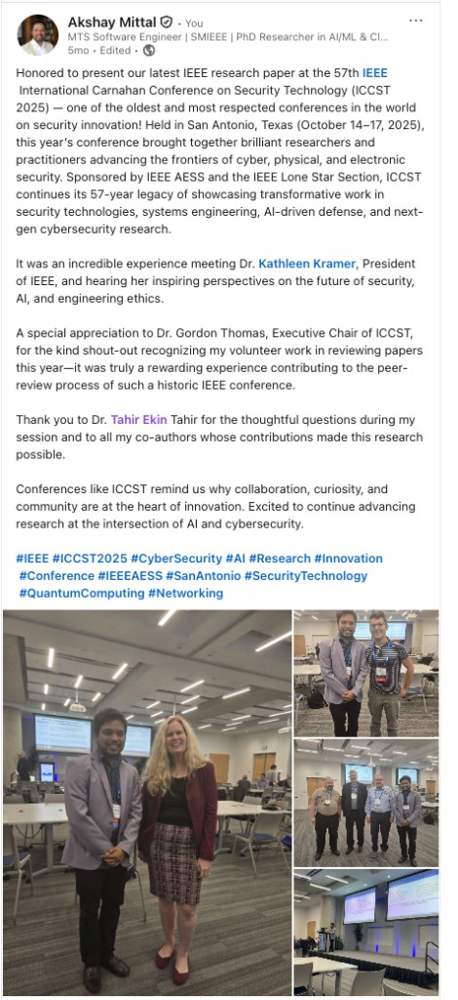
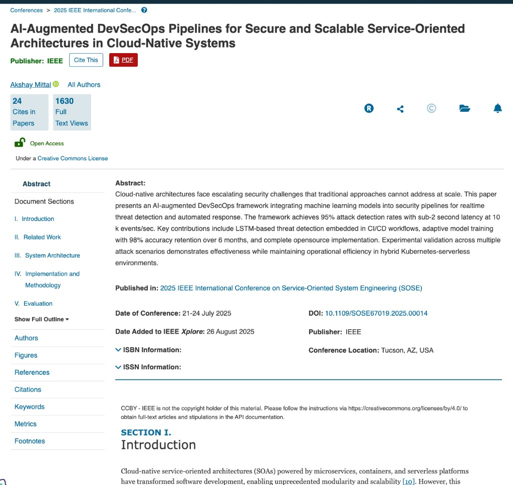
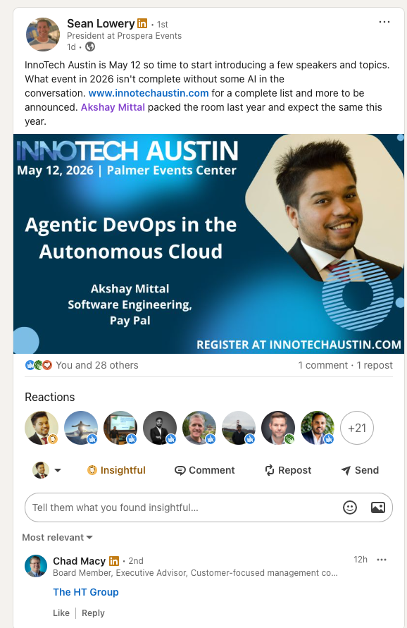
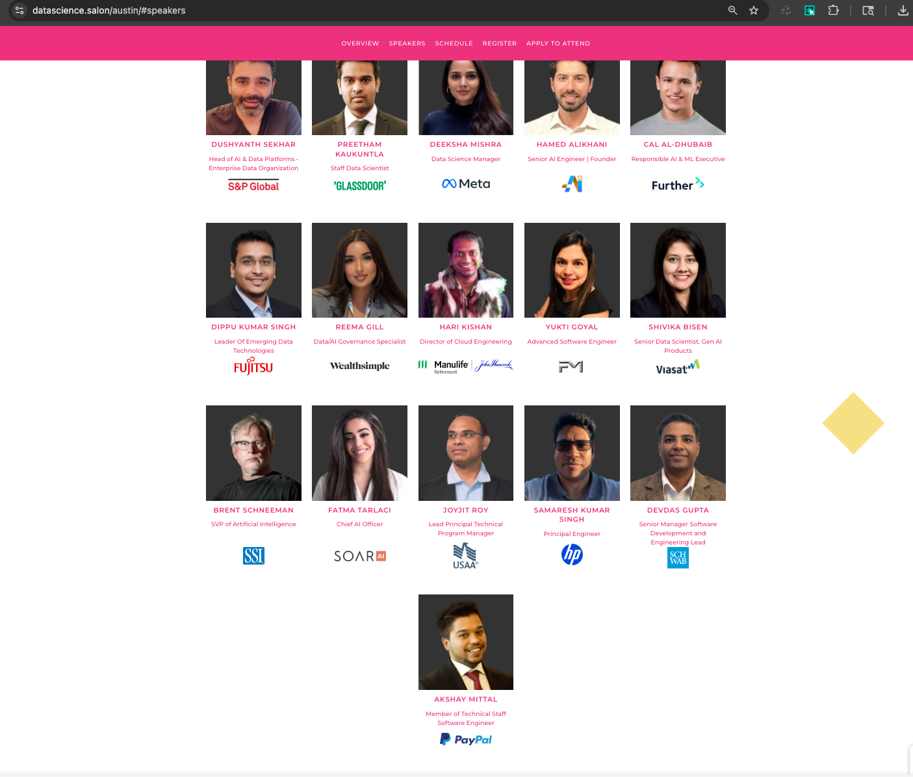

Secure cloud-native systems, agent identity, and DevSecOps automation—across industry, research, and open source.
I build AI-driven security and DevSecOps automation for cloud-native financial infrastructure at PayPal. I am an IEEE Senior Member, author of 30+ peer-reviewed publications, and an active peer reviewer and program committee member across IEEE and ACM venues.
IEEE Senior Member · Member of Technical Staff, PayPal · Ph.D., Information Technology (University of the Cumberlands, 2026)
Google Scholar · ORCID · ResearchGate · Web of Science · LinkedIn
I'm a Member of Technical Staff, Software Engineer at PayPal with over 10 years of experience designing and delivering secure, scalable cloud-native applications across the entire technology stack. Currently, I architect AI-driven security solutions for PayPal that safeguard 50+ million daily transactions and $1.53 trillion in annual transaction volume.
My expertise spans AI-driven threat detection, DevSecOps automation, cloud-native infrastructure (Kubernetes, microservices), and critical infrastructure protection. I focus on building secure systems, leading cross-functional teams, and mentoring engineers through community programs and one-on-one sessions.
As an IEEE Senior Member (peer-nominated; top tier of IEEE membership) and Ph.D. graduate in Information Technology, I contribute to the academic community through 30+ peer-reviewed publications, book chapters in volumes from Springer Nature and IGI Global, and academic service including program committee roles for IEEE, ACM, and international conferences. I serve as Chair and Organizer of the ACM Austin professional chapter (1,000+ members on Meetup as of early 2026) and as a judge for competitions including NASA Space Apps Challenge, MassChallenge Texas, and other hackathons and demo days. My research spans AI-driven security automation, autonomous cybersecurity systems, and zero-trust architectures with practical applications in enterprise environments.
Education: Ph.D. in Information Technology, University of the Cumberlands (completed 2026) | M.S. in Computer Science, Texas State University
Selected roles across financial services, retail, and cloud-native platforms, focused on measurable outcomes and production impact.
Four representative threads: agent identity, research-backed security AI, published DevSecOps automation, and production-scale financial infrastructure outcomes.
Problem: Multi-agent systems need secure identity, discovery, and trust routing across cloud-native environments.
Approach: Built a Kubernetes-native trust layer supporting MCP and A2A patterns with secure discovery and routing primitives.
Outcome: Reproducible agent identity and routing patterns with a clear demo path for platform teams adopting agentic systems.
Problem: Security teams need reliable AI assistance without high hallucination rates.
Approach: Evaluation-driven RAG workflow with reproducible experiments and governance-oriented outputs.
Outcome: Strong F1 with a low-hallucination profile, packaged as open reproducibility code for researchers and practitioners.
Problem: Pipelines fail from configuration drift, operational complexity, and slow remediation loops.
Approach: Self-healing and predictive maintenance patterns with security-by-design workflow guidance.
Outcome: Reference implementation showing how AI can reduce toil and improve deployment reliability.
Related: Sole-authored IEEE SOSE 2025 paper — DOI.
Context: Global payments require resilient AI-driven security controls without drowning operators in noise.
Approach: Architected and shipped controls across cloud-native financial infrastructure with measurable reliability and incident outcomes.
Outcome: Systems supporting 50M+ daily transactions and $1.53T annual volume; ~30% false-positive reduction; automated remediation for a majority of security incidents; meaningful latency and error-rate improvements.
Recognized for outstanding contributions to technology and innovation in the industry. Each card includes a compact visual where a certificate or official record is available.

First Author - Cloud Security Research

First Author - LLM Framework Research

First Author — Best Presenter recognition (large international submission pool)

First Author - Recognized among 13 accepted papers at conference

Innovation Excellence - 2nd Runners-Up | Led SpecFixer project

Top 10% of 500,000+ global members | Official elevation letter from IEEE President
Semifinalist - Long Island University School of Business
Comprehensive skills spanning full-stack development, AI research, and secure cloud infrastructure.
Three representative publication threads, two publisher-backed books, and a compact view of academic service. Full venue lists and the complete bibliography live on Google Scholar and ORCID.
Digital Health Journal
IEEE International Symposium on Software Engineering for Adaptive and Self-Managing Systems (SOSE)
IEEE International Conference on Computer and Applications

Springer Nature (book chapter)
AI-driven DevSecOps for automated security, policy enforcement, and secure multi-tenant cloud deployments.
Springer Nature Monograph
Monograph under contract on AI-powered DevSecOps for cloud-native systems.
Conference talks, podcasts, and long-form interviews. Tap a thumbnail to load the YouTube player. For a larger catalog (Cox, ICCA, meetups, workshops), open the video library tile below.
Podcast / long-form
Agent Name Service (ANS), zero-trust patterns for AI agents, and securing large-scale cloud-native systems.
Speaker
Session on agentic DevOps and autonomous cloud operations. Details: InnoTech Austin.

Expert Speaker & Panelist
AI Love Data runs the Data Science Salon series. One of five expert panelists discussing AI and data science innovations in Austin.

Featured Speaker
International organization (19,945+ LinkedIn followers).
Featured Guest
29,300+ YouTube subscribers.
Featured Guest
Palo Alto Networks podcast.
Speaking Engagement
IEEE Computer Society event.
Featured Speaker
Conference session on Agent Name Service (ANS) for secure AI agent identity and trust in cloud-native environments.
I'm always interested in discussing new opportunities, technical challenges, or potential collaborations.